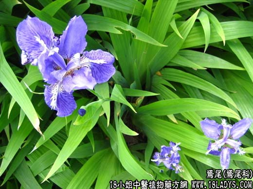

【中药概述】鸢尾为鸢尾科植物鸢尾的根状茎。辛，苦，寒；有小毒。 活血散瘀，祛风利湿，解毒消积：用于跌打损伤，风湿疼痛，咽喉肿痛，食积腹胀，疟疾等；水煎服。外用，治痈疖肿毒，外伤出血等。 【药效鉴别】鸢尾除有与射干相似的效用而外，还兼能消积，治食滞胀满。 【化学成分】根状茎含夹竹桃甙、草夹竹桃双糖甙及三种异黄酮等。 【用量用法】本品5——15g，水煎服，或入剂。外用适量。
本文解释权归中药大全，本文地址： https://www.daquan.com/post/1885.html